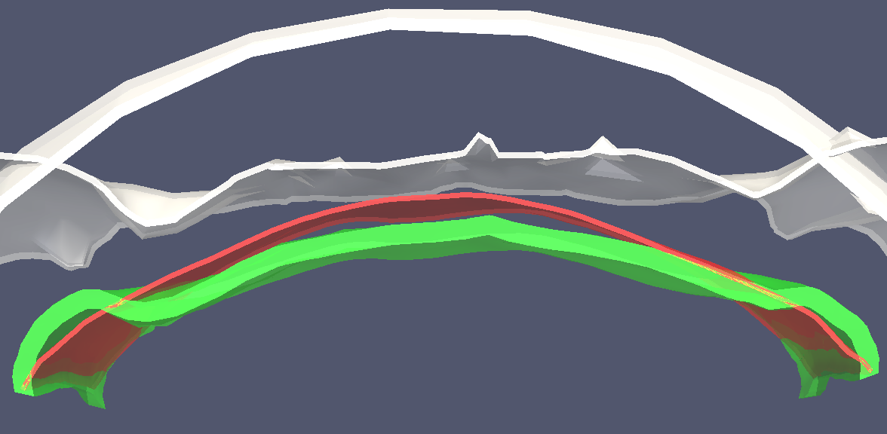
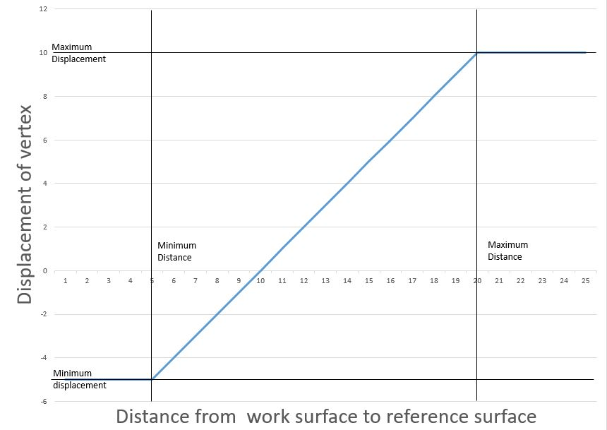

Interactive! Click to rotate. The white surface is the bone, the red is the meat, and the green is the calculated surface, optimized for comfort.
This project is a library of routines, designed to create 3d printable contact surfaces for othodontic and orthopedic devices.
These routines interploate surfaces based on soft tissue thickness, create beveled edges to reduce chafing, and make solids for printing or further CAD work.
This project uses libigl, a C++ geometry processing library.
In dentistry, devices such as palate appliances and partial dentures may apply pressure to the soft tissue inside the mouth.
These devices are typically made by creating a model of the soft tissue of the mouth, either by laser scan or by imprint in putty.
However, such appliances are often irritating to soft tissue.
Our goal is to make more comfortable appliances in a simple, automated way.
To do this, we adjust the surface, according to the thickness of the soft tissue.
In areas where the bone is close to the mucous membrane, the appliance surface must be pulled a little away from the soft tissue.
Also, where the bone is further away from the membrane, the surface must be pushed towards the bone to compensate for fluid displacement.
This method may also be used for other prostheses.
We sugest simple user specifications accomodating these biomechanical properties.
We propose an algorithm that takes as input two surface meshes.
The first is a patch of the mucous membrane intersected with the appliance (work surface)
The second is a corresponding patch from a CT scan of the skull (reference surface).
The algorithm adjusts each point in the work surface based on the local distance to the reference surface.
Then, a beveled edge is computed.
Finally, the surface is turned into a solid mesh.
Technical Discussion

The white surface is the bone, the red is the surface of the soft tissue, and the green is the calculated surface, the contact surface of the device.
The algorithm looks at each point of the red surface, and finds the thickness of the soft tissue, based on the distance to the white surface.
It then calcuates a displacement, a negative displacement moves the green surface away from the bone, a positive displacement moves the green surface towards the bone.
In our approach, we use just four values to specify the green surface: minimum and maximum thicknesses and displacements.
Then, if the thickness is less than the minimum thickness, then the green surface follows the red surface, but is apart by the minimum displacement.
If the thickness is more than the maximum thickness, then the green surface follows the red surface, but is apart by the maximum displacement.
If the thickness is between minimum and maximum thickness, then the green surface is displaced according to an interpolation:

The modified surface is then transformed into a solid figure with beveled edges,
ready to be 3d printed.